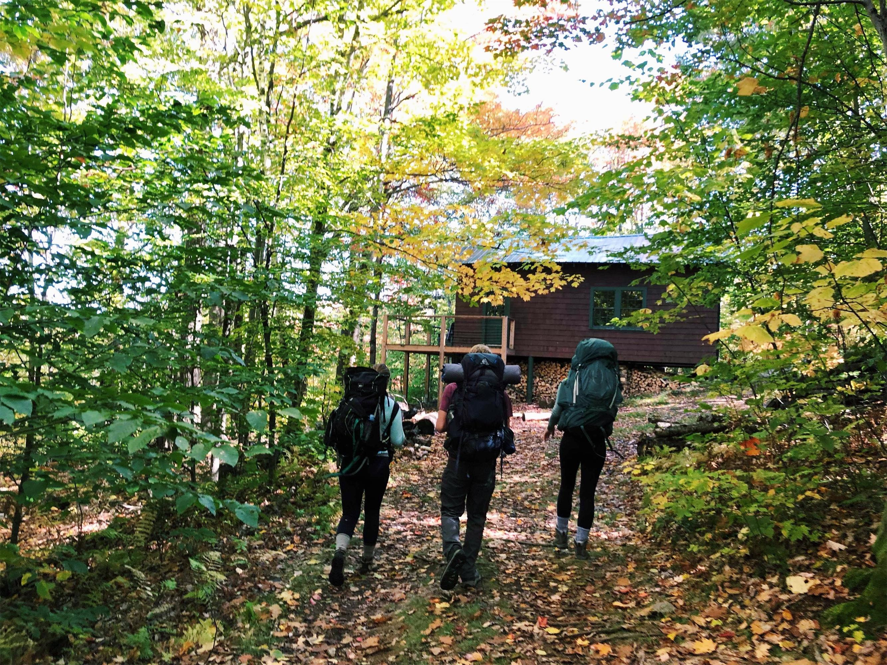
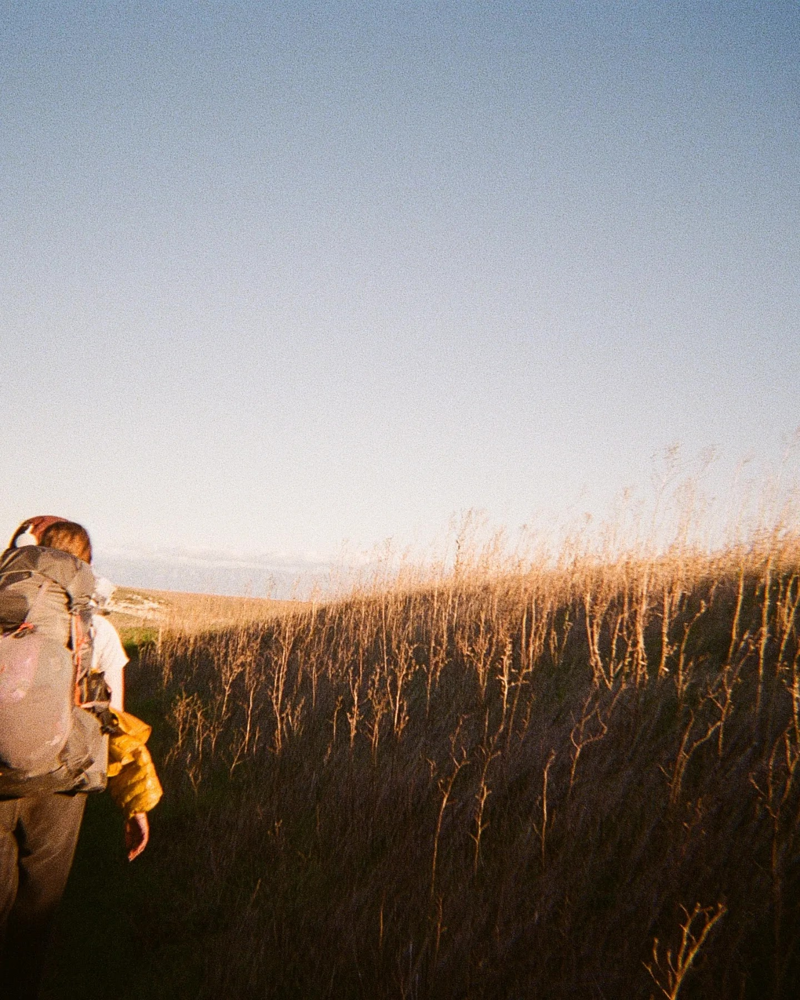
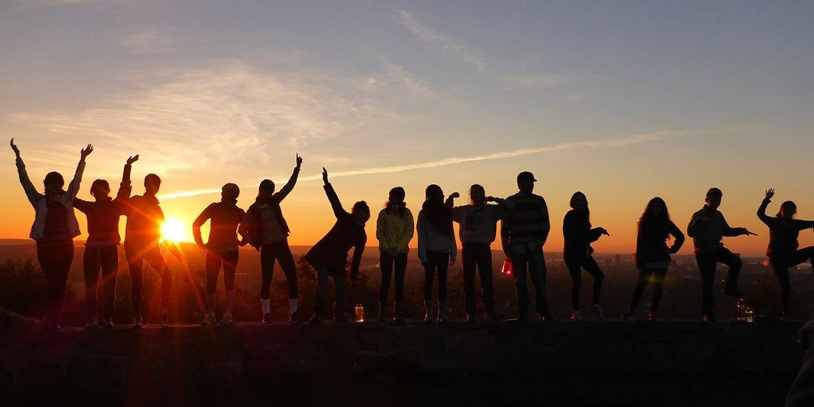

Join us and get outside!
Offering trips, events, and good-spirited community
since who knows when.
A little about
Yale Outdoors.
The outing club for everyone at Yale. Run by students.
Yale Outdoors is the university’s outing club. We lead day trips from New Haven and bigger trips over October, Winter and Spring Break, rent camping gear for a few dollars a day, and teach one another outdoor skills.
You do not need experience. Most people who come the first time have never done it.

Coming up
Day trips most weeks, three break expeditions a year, and room for your idea.
Suggest a trip ↗Where to start
Weekend outings, the three break expeditions, and how to suggest your own.
See what is free on your dates and put in a rental request.
From the mailing list to Pnuckle to Leader to the Board.
Break expeditions
Explore trips ↗Day trips most weeks, three break expeditions a year, and room for your idea.

October Break
A long weekend in the mountains while the leaves are turning. Past October Break trips have been backpacking trips in the Northeast.
October Break
Winter Break
Over the long break the club has gone as far as the Channel Islands in California, reached by boat from Ventura.
Winter Break
Spring Break
The big spring expedition, planned over the winter by the Expedition Coordinators with the trip leaders.
Spring BreakFrom the field
Instagram ↗
